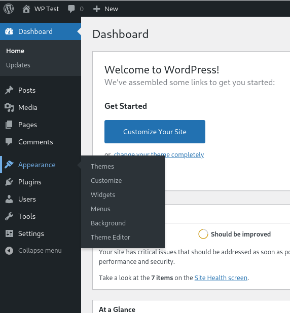
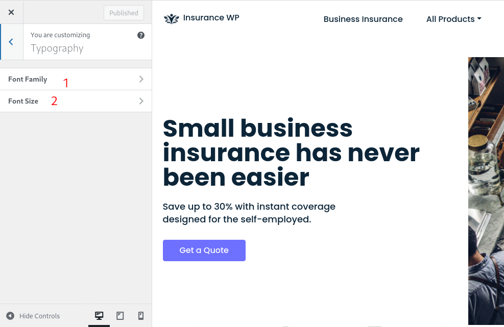

Introduction Last updated: 2021-04-08
Insurance WP is WordPress theme for Insurance Business.
Version: 1.0.0 | Author: IWP | http://www.free-insurance-websites.com
Insurance WP is WordPress theme for Insurance Business.
Version: 1.0.0 | Author: IWP | http://www.free-insurance-websites.com
Requirements
We assume you have WordPress website fresh install (not wordpress.com). How to install WordPress? You can find on google.
Please, follow the steps below to install Insurance WP Theme.
This is probably the simplest way for most users. Here are steps you need to take:

The theme requires the following plugin: Elementor, Contact Form 7, One Click Demo Import
Choose plugin what you want to install, or install all of them (recommended)
Make sure you install and active One Click Demo Import (See Installation Step 8)
Click on Import Demo Data button.
Select theme what you want to Import Demo Data, then click Import Demo button. Please, wait a moment and don't turn off it or click back on browser.
Click Continue & Import

When import demo data finished, you can click Theme Settings to Customize your website or Visit Site to see Import demo data result.
On this stage, please make sure you have cPanel Access
If you want to install via FTP, here are 3 steps you need to take:
To start customizing Insurance WP theme, in the Admin page please go to Dashboard > Appearance > Customize
Note:
Please remember to click Save & Publish button after done customizing to save the changes These are global settings so its effect is site-wide. These settings can be overridden in single post or page.
Customization Page like screenshots bellow

You can customize several things on Header including:
You can customize several things on Footer including:
You can customize several things on Blog including:
You can customize several things on Color including:
You can customize several things on Typography including:

You can customize several things on Menus including:
You can customize several things on Homepage Settings including:
You can customize several things on Additional CSS including:
You can create Testimonial from your customer. Just click Add Testimonial button -> Fill testimonial data -> Save/Publish

Testimonial will show like screenshot bellow:
You can create List Agency Data. Just click Add Agency button -> Fill Agency data -> Save/Publish
List Agency will show like screenshot bellow: